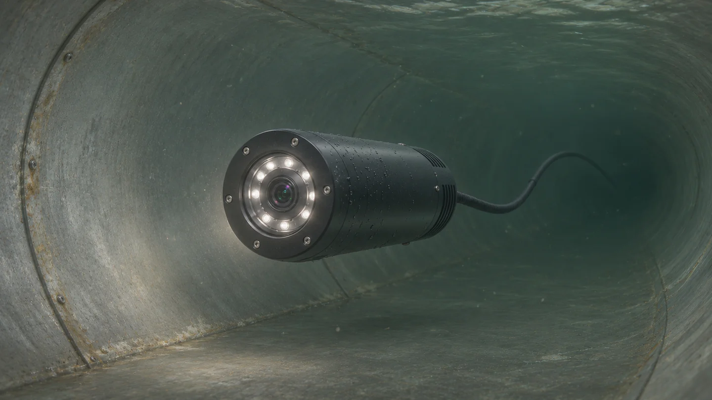

给水管道检测机器人
面向带压给水管段的漏点排查，方案通过系缆接入推进、压力采集和绕线设备。
- 个人职责
- 参与机器人本体侧推进指令与检测流程的对接。
- 项目内容
- 双路推进与检测采样配合

项目整体架构图
带压管段检测
地面工控机组织巡航、驻留采样及回收阶段
推进与采样调度
系缆机器人双路推进，携带水听器及压力采集装置
分阶段观测
同步采样记录对齐音频、压力、姿态、放缆量与推进速度
ROS2 节点通信关系图
本图表示方案中的节点职责与数据流。
推进与回收
检测任务节点管理巡航、驻留和回收阶段
阶段指令
系缆设备接口连接推进驱动器、压力仪表和绕线器
设备控制
本体与绕线设备执行双路推进及收放线
声学分析
音频与运行数据采集读取水听器音频及运行工况
音频、压力与状态
同步记录模块按阶段组织数据并附估计里程
带里程的采样片段
声谱分析与筛查为疑似泄漏片段安排复测优先级
软件模块设计
- 检测阶段编排
- 组织巡航、驻留采样和回收，关联推进状态与采样记录。
- 音频与压力采集
- 分别接入水听器音频和压力变送器，关联姿态、放缆量与推进速度。
- 检测里程估计
- 使用入口和可识别管件作为参考，结合放缆量及姿态估计检测区间。
- 声学筛查
- 通过声谱图与压力瞬态辅助识别疑似泄漏片段和应复测区间。
硬件通信接口设计
| 设备或端点 | 通信接口 | 信号或数据 |
|---|---|---|
| 双路推进驱动器与工控机 | 系缆控制链路 | 推进指令与推进速度 |
| 压力变送器与工控机 | 系缆采集链路 | 压力及瞬态变化 |
| 绕线器与计米仪表 | Modbus RTU | 收放线指令与放缆计米 |
| 水听器与工控机 | 独立音频采集模块 | 管道水声采样 |
关键功能与技术说明
- 按推进工况建立噪声基线
- 在声学筛查中区分巡航和驻留状态，根据同类推进工况对照背景噪声，并结合压力瞬态标记可能受阀门操作干扰的片段。
- 按里程组织复测
- 把可疑声谱与估计里程带关联，结合多次采样结果安排复测，报告保留原始音频和声谱图。